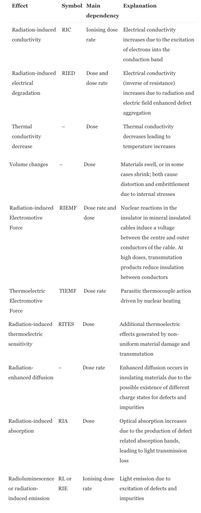

ITER (International Thermonuclear Experimental Reactor)
What is ITER?
The International Thermonuclear Experimental Reactor, or ITER, is the world’s first nuclear fusion power plant experiment. It aims to be complete with its reactor ready for commercial use by 2040. The design incorporates a tokamak - an experimental machine in which the energy produced in the fusion reaction is absorbed as heat in the walls of the vessel. This heat will produce steam, which will turn a turbine and generate electricity. Inside the tokamak is a doughnut-shaped vacuum chamber, where gaseous hydrogen becomes a plasma under immense pressures and temperatures. The plasma itself can be controlled by magnetic coils surrounding the vessel; in basic terms, the ITER experiment is just experimenting with this magnet to maximise energy output of the reactor. The tokamak has been experimentally adapted since the late 1960s, however ITER will be the world’s largest tokamak.

Figure 1: A picture of the inside chamber of the ITER tokamak reactor
taken from their website[1]. Accessed 02/12/2020.
Aims
There are five main objectives of ITER:
- To produce 500MW of power -i.e. achieve 10 times as much energy output as its input.
- To demonstrate the integrated operation of technologies for a fusion power plant - scientists will be able to study plasmas and explore technologies such as heating, control, diagnostics, cryogenics and remote maintenance.
- Achieve a deuterium-tritium plasma in which the reaction is sustained through internal heating - exploring a BPX (burning plasma experiment) where the heat from the fusion reaction is confined within the plasma efficiently enough for the reaction to be sustained for a long duration.
- Test tritium breeding - the world supply of tritium (used with deuterium in the fusion reaction) is insufficient and a later-stage target of ITER is to be able to produce its own tritium.
- Demonstrate the safety characteristics of a fusion device - a primary goal is to demonstrate the control of the plasma and fusion reactions with negligible consequences to the environment.
Current Status and Strategy
ITER is critical in the research and development of using nuclear fusion
power plants to create electrical energy commercially. The facility, which
is situated at St.Paul-lez-Durance in the Cadarache Valley in southern France,
is one of many current nuclear energy production sites, many of which include
current nuclear fission power plants which are used commercially [2]. The
partners in ITER have implemented extensive research and discovery across a
range of science and technology fronts in the design of the tokamak - this
will allow the development (and eventually the achievement) of the project’s
engineering and fusion plasma performance requirements. Significant
developments have been made, such as developments in superconducting magnet
technologies and in producing the high-performance superconducting strand
niobium-tin (Nb3Sn). In inner components subject to high heat
flux are capable of sustaining quasi-stationary heat loads of up to 10 MW/m2
and transient loads of up to 20MW/m2.
ITER’s ambitious goal is to aim for a power output of as much as 700MW - i.e.
the equivalent of 2.481020 14-MeV neutrons per second to give an uncollided
flux of 41013n cm-1s-1. It is essential that ITER has an efficient Nuclear
Analysis Strategy in place, which will involve meeting state regulations
regarding radiation dosage limitations and other safety measures. To
ensure all components are functioning correctly there must be sufficient
shielding in place. This is due to the fact that several of the diagnostics
(with machine protection and plasma control) are embedded in the inner
machine component and ensure a high nuclear and electromagnetic load for
long periods of time, hence they have reduced maintainability compared to
the diagnostics in the ports. Table 1 below shows how they are directly
affected by not only nuclear heating / mechanical effects from lattice damage
/ transmutation, but also by several indirect radiation effects.[3]
It is important that the diagnostics are robust and have a highly effective
capability required for routine and reliable diagnostic operations.
Upon decommissioning, ITER has a responsibility to reduce the volume and
radio-toxicity of its waste. It is believed that it will take over 30 years
to complete construction operation and the decommissioning of the plant. [4]
Chapter 12 of the Fusion Science and Technology Journal [5] considers generic
issues affecting the diagnostics in a BPX which are directly or indirectly
caused by the radiation environment. These issues become an important factor
in the choice of machine and diagnostic layout, construction and maintenance.
Issues such as nuclear radiation effects on specific components
(e.g. cables), as well as thermal and mechanical degradation issues, must
be addressed. It is much more difficult to replace inner components that
have been subject to wear and tear by particle bombardment so in-situ
mitigation techniques are required. Recalibration is also more difficult for
the same reasons. It is important for BPX to enable the design of future
power plants - the development needs for diagnostics are assessed.
The implementation of the French Order of 7th February 2019 [6] regarding
INB (a French acronym for Basic Nuclear Installation) within the EU-DA
(European Union Domestic Agency), and specifically on the EC-UL (Electron
Cyclotron Upper Launcher), which is used to heat and control the plasma. The
launcher includes both the port plug and the related in-vessel terms (such
as the nuclear shielding, blanket module and optics), and the ex-vessel
first confinement items (such as the diamond window, isolation valve,
waveguides, miter bends, tapers and port plug back end).
Future Plans
Technologies such as tritium breeding (that is, sustainably creating their
own supply of tritium) and remote maintenance (i.e. fixing inner machine
diagnostic components subject to wear and tear) require further research and
development. The need for robust safety and hardware protection has been
addressed via the control system. (Further Discussion)
After the ITER project has successfully managed to commercially produce an
output with a Q factor of 10 (for every 50MW of power supplied to the reactor,
500MW is produced), Korea will launch its K-Demo, which is essentially a
copy of ITER with the aims of testing larger scale power production and a
power output of Q factor 30-50. The machine is simpler with fewer diagnostics
and its purpose will be to demonstrate the feasibility of using nuclear
fusion as an efficient and sustainable method to generate electrical energy
for the world’s ever-growing population. Construction is expected to take
place in the 2030’s and it is expected to run a continuous (or
near-continuous) steady-state commercial operation in the 2040’s.
Political Issues
The loss of the UK’s membership to the European Atomic Energy Community (Euratom), as a result of exiting the European Union (EU), will result in loss of access to ITER. There is great uncertainty as to what role the UK will play in the involvement in ITER due to the loss of this membership. 90% of each member’s contribution is ‘in-kind’ equipment (as opposed to direct payments), other 10% is ‘in cash’ to fund the ITER budget.
Working Internationally
Extensive research has been carried out into how globalisation trends affect our diversity and subsequently our cultures and our languages. It has been proven that multicultural organisations are more creative, more responsive to change and better suited to rapid changes in societies and economies. We seek to replace our current “corporate culture”; in which our only language used internationally is English; with a more multicultural and multilingual business environment, often referred to as the ‘learning organisation of the future”. As humans, we learn each other’s values, customs and beliefs - this necessitates the RICH (respect, interaction, curiosity and humility) guidelines in which we aim to one day replace our corporate culture with. In order to do so, it is important that the committee all receive professional training so that new ideas and approaches benefit everyone. The 4 year experience of Agence ITER France runs an ILLP (International Language Learning Program), as a result of its involvement with 29 different nationalities and over 40 different languages. It explores how newly recruited staff are trained to accommodate a multicultural and a multilingual environment.
Table 1 showing radiation effects on the reactor[5]:

References & Further Reading
[1]ITER Organisation, The ITER Tokamak, (2019), WWW document, https://www.iter.org/mach
[2]D. J. Campbell,T. Akiyama,R. Barnsley, et al. Innovations in Technology and Science R&D for ITER, Volume 38, Pages 11-71, (2019), https://doi.org/10.1007/s10894-018-0187-9
[3]G. Vayakis et al. Nuclear technology aspects of ITER vessel-mounted diagnostics, (October 2011), https://doi.org/10.1016/j.jnucmat.2011.01.081
[4]M. J. Loughlin et al. ITER Nuclear Analysis Strategy and Requirements, (April 2017), https://doi.org/10.13182/FST56-566
[5]G. Vayakis et al. Fusion Science and Technology Journal Chapter 12: Generic Diagnostic Issues for a Burning Plasma Experiment, (March 2017), https://doi.org/10.13182/FST08-A1684
[6]P. Wouters et al. Practical Implementation within the Electron Cyclotron Upper Launcher of the French INB Order of 2012, Vol.146 Pages 273-276, (2019), https://doi.org/10.1016/j.fusengdes.2018.12.044
Author: Ciara Hurley